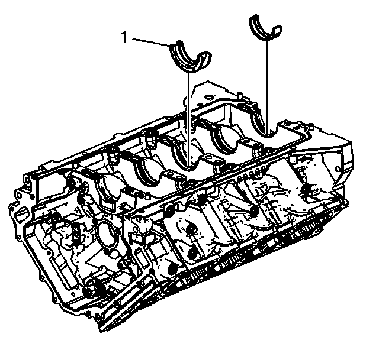
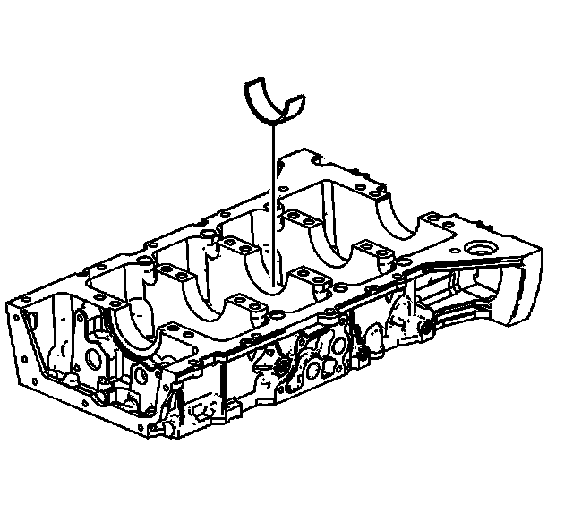
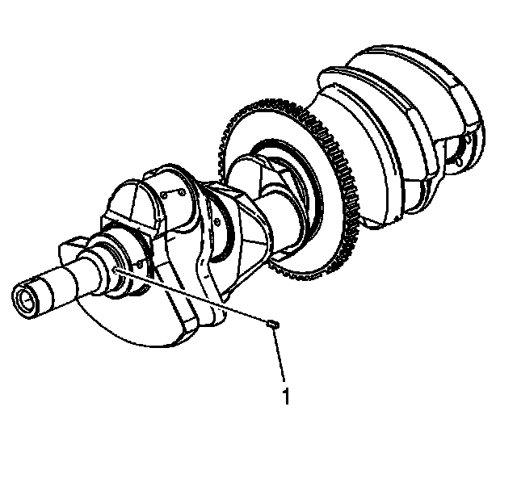
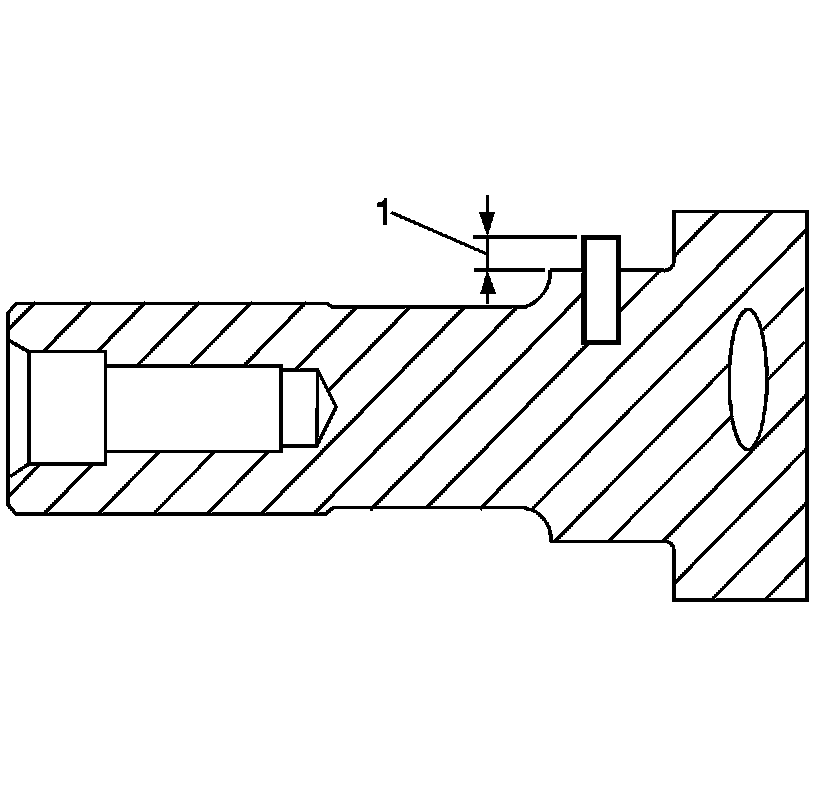
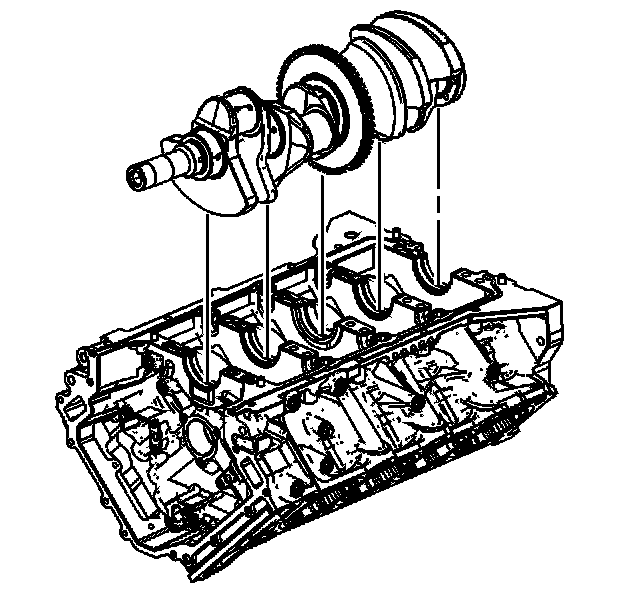
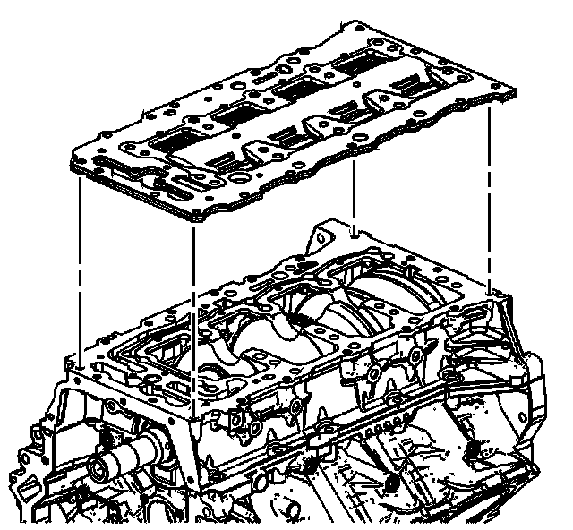
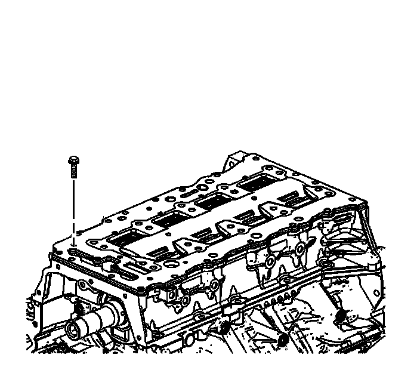
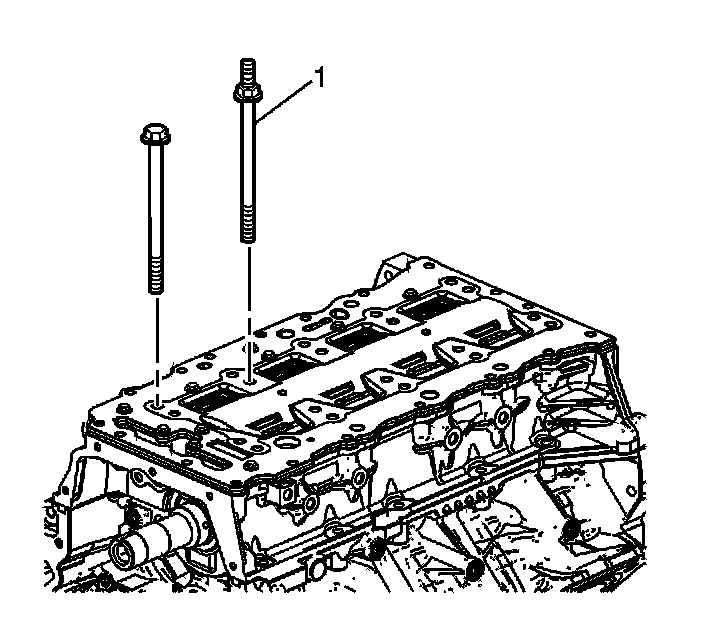
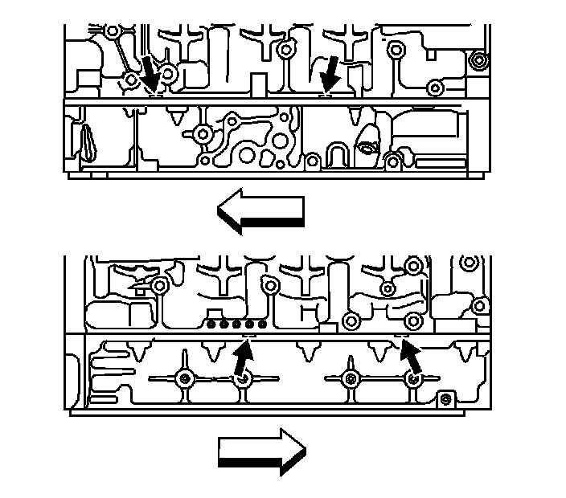

97. Crankshaft and Bearing Installation
Crankshaft and Bearing Installation
Crankshaft Bearing Installation Procedure
Tools Required
J 45059 Angle Meter

Important: If the crankshaft bearings have been used in a running engine, you must replace them with NEW crankshaft bearings for reassembly.
1. Clean the upper and lower crankcase crank bore with a lint-free cloth.
2. Clean all the oil from the backside of new bearing halves.
3. Install new upper crankshaft bearings into position. The thrust bearing (1) belongs in the number three journal. Be sure the upper bearing insert contains the oil transfer hole and groove. Roll the bearing into position so that the lock tang engages the crank slot. The bearing must fit flush with the upper crankcase.

4. Install new lower crankshaft bearings into position in the lower crankcase. The lower crankcase crankshaft bearings are identified by NO grooves or holes. The bearings must fit flush with the lower crankcase.
5. Apply a liberal amount of GM crankshaft prelube GM P/N 1052367, (Canadian P/N 992869), or engine oil to the upper and lower bearing surfaces.
Crankshaft Installation Procedure

1. Install the NEW crankshaft sprocket drive pin (1), if removed due to damage.

2. Ensure pin height (1) is 2.75-3.25 mm (0.0689-0.1280 in).

3. Gently lower the crankshaft into position in the cylinder block.
4. Ensure the crankshaft turns without binding or noise.
Crankshaft Bearing Clearance Measurement Procedure
1. Place a length of fresh, room temperature plastic gaging material all the way across all the crankshaft bearing journals.

2. Align the lower crankcase with the dowel pins in the upper crankcase.
3. Install the lower crankcase onto the upper crankcase slowly until feeling a positive stop.
4. Inspect the upper-to-lower crankcase joint in order to make sure the lower crankcase is fully seated on the cylinder block.

5. Install the old oil manifold and oil scraper plate assembly.

Notice: Refer to Fastener Notice (Fastener Notice) .
6. Install the oil manifold plate bolts.
Tighten the oil manifold plate bolts to 10 N.m (89 lb in).

7. Loosely install the main bearing bolts. The single stud-end bolt (1) used to attach the oil pump pipe and screen assembly support bracket is installed in the inboard position in the second set of main bearing bolts from the front and left bank side of the engine.

8. Install the left side upper-to-lower crankcase perimeter bolts.

9. Install the right side upper-to-lower crankcase perimeter bolts.

10. Tighten the lower crankcase bolts in proper sequence.
1. First Pass
Tighten the lower crankcase bearing bolts (1-20) to 20 N.m (15 lb ft) in the proper sequence.
2. Final Pass
Tighten the lower crankcase bolts (1-20) an additional 65 degrees in the proper sequence using the J 45059 .

11. Tighten the upper-to-lower crankcase perimeter bolts (1-8).
Tighten the upper-to-lower crankcase perimeter bolts (1-8) to 30 N.m (22 lb ft).
12. Allow the assembly to sit for at least 2 minutes.
13. Remove the main bearing bolts (1).
14. Remove the oil manifold plate bolts.
15. Remove the old oil manifold and oil scraper plate assembly.

Notice: Use a plastic pry tool when prying case halves apart to prevent damage to the Upper and Lower Crankcase surface. Do not continue to push the pry tool in the crankcase as the Upper and Lower Crankcase halves separate. This may damage the sealing surface.
16. Working on either side of the lower crankcase, separate the crankcase halves by alternately prying in the grooves provided until the lower crankcase is free of the dowel pins.
17. Remove the lower crankcase.

18. Determine the main bearing clearance by comparing the width of the flattened plastic gaging material at its widest point with the graduation on the gaging material container.
19. Compare your measurements with the engine mechanical specifications. If the new bearings do not provide the proper crankshaft to bearing clearance, re-measure the crankshaft journals for the correct specified size and check to make sure you have the correct new bearings. If the crankshaft journals are incorrectly sized, replace the crankshaft. No crankshaft machining is permitted and undersized bearings are not available.
20. Clean the plastic gaging material from the crankshaft bearings and/or crankshaft bearing journals using a soft lint-free cloth.
21. Coat the upper crankshaft bearings and crankshaft main bearing journals with GM crankshaft prelube GM P/N 1052367, (Canadian P/N 992869), or equivalent.
22. Reinstall the crankshaft into position in the cylinder block.